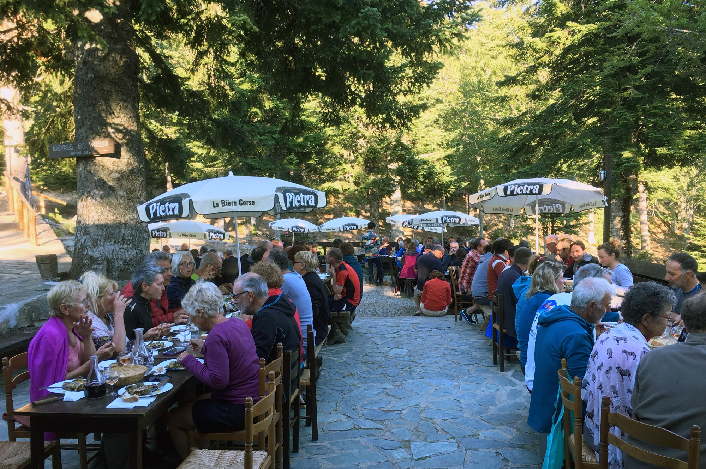

Bienvenue sur le site du Relais San Petru Di Verde !
Situé à proximité du Col de Verde sur le GR20, notre gîte vous accueille pour une expérience unique en pleine nature.
Le relais San Petru Di Verde vous accueillera dans un cadre naturel et sauvage. Dans une forêt centenaire de pins Laricios, d'hêtres et de sapins.
